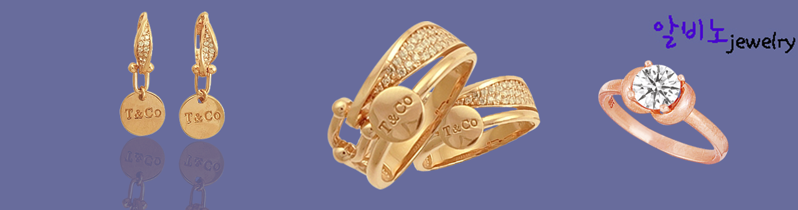

자바스크립트는 복잡한 무언가(주기적으로 내용이 갱신되는 기능이나 능동적인 지도, 변화하는 2D/3D 그래픽, 동영상 등)를 웹페이지에 적용할 수 있게 하는 스크립트 혹은 프로그래밍 언어입입니다. 자바스크립트는 표준 웹 기술이라는 레이어 케이크에서 세번째 층이라고 볼 수 있습니다. 다른 두 층(HTML과 CSS)에 대한 보다 자세한 정보는 학습 영역의 다른 부분에서 찾아 볼 수 있습니다.
주얼리. 180년 이상의 전통을 이어온 전문가들의 장인정신이 담긴 아름다운 디자인의 네크리스, 펜던트, 브레이슬릿, 링 등 모든 티파니 주얼리를 만나보세요. 새로운 주얼리 · 가장 인기있는 주얼리 · 개성있는 실버 주얼리 · 네크리스 및 펜던트